Declaración de artista
La práctica de la artista indaga en el humor y la ironía como lenguajes contemporáneos para abordar experiencias emocionales complejas. A partir de los memes virales de internet, explora cómo ciertas situaciones de la vida cotidiana se repiten, circulan y se transforman en imágenes compartidas desde la risa. Le interesa observar qué es lo que se viraliza en las redes sociales y cómo ese acuerdo colectivo sobre aquello de lo que es posible reírse funciona como una estrategia de afrontamiento frente a la adversidad. El humor aparece así como un recurso sensible para procesar lo que duele, habilitando la identificación y la catarsis.
El desplazamiento de estos lenguajes desde la pantalla hacia el espacio material es uno de los ejes de su producción. Su proceso creativo se construye como un collage mental que se materializa a través del collage, el fotomontaje y la escultura. Recolecta plásticos y residuos que le permiten construir formas específicas, resignificando materiales descartables y vinculándolos con la fragmentación propia del entorno digital. La utilización de distintos soportes y medios amplía los sentidos de la obra, transformando lo efímero del meme en objeto y otorgando cuerpo a emociones que suelen circular de manera intangible.
Uno de los principios de su quehacer es la construcción de una experiencia de reconocimiento colectivo. En un contexto donde gran parte de la vida transcurre mediada por pantallas, su trabajo busca generar un espacio de identificación, donde reírse “para no llorar” se vuelve una forma compartida de atravesar lo común.
Biografía - Romina Paola Maciel
Romina Paola Maciel (Ciudad de Corrientes, Argentina, 2002) es una artista visual emergente cuya práctica se articula en torno a la cultura digital y las dinámicas de la comunicación viral. Su obra se centra en la exploración de la ironía, el humor y el sarcasmo como herramientas críticas, utilizando la estética de los memes y el imaginario de internet para generar reflexiones sobre la identidad contemporánea.
Desarrolló su formación en la Escuela de Bellas Artes de la Facultad de Humanidades y Artes de la Universidad Nacional de Rosario (UNR). En esta institución, obtuvo en 2024 el título de Profesora en Bellas Artes, con orientación en Pintura.
Actualmente, se encuentra en la etapa de finalización de la Licenciatura en Bellas Artes en la UNR, mas precisamente en la investigación y preparación de su tesina de grado. Este proceso académico es fundamental para desarrollar su lenguaje visual y conceptual.
Recientemente ha participación en la muestra colectiva de la Galería La Toma (2025), a partir de una propuesta curatorial propuesta por la cátedra Taller de Pintura II, dirigida por el Lic. Pablo Silvestri.
Obras
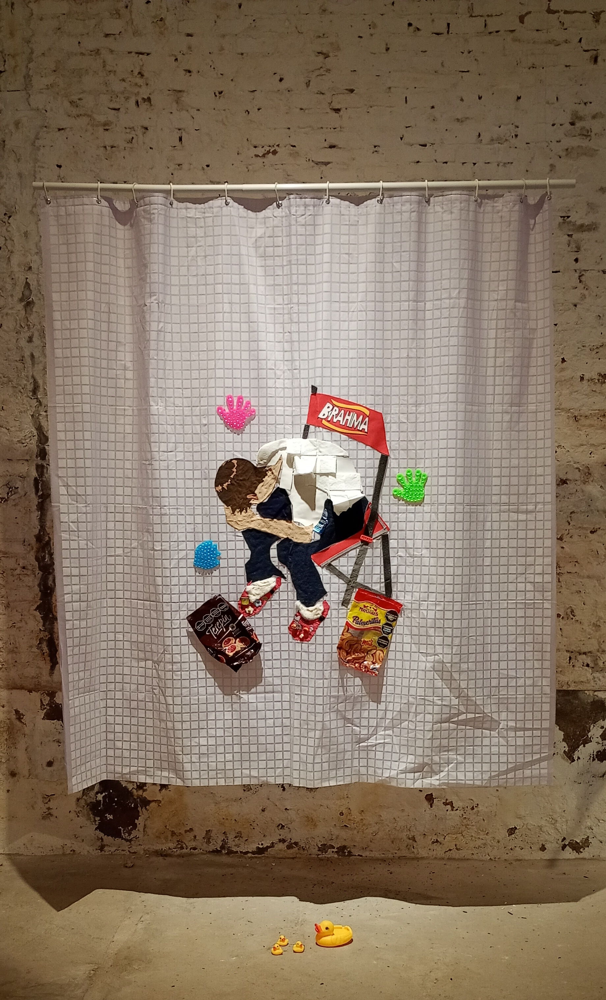 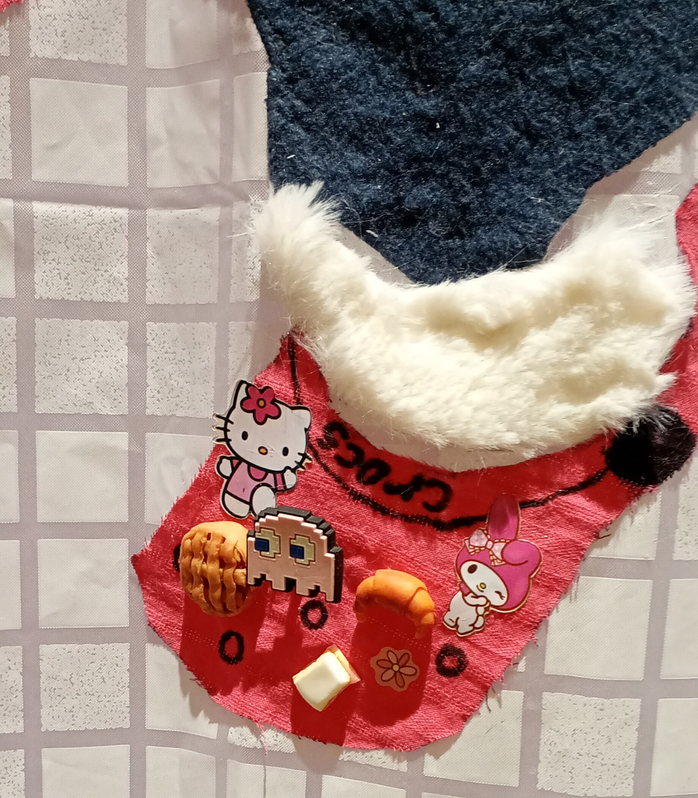 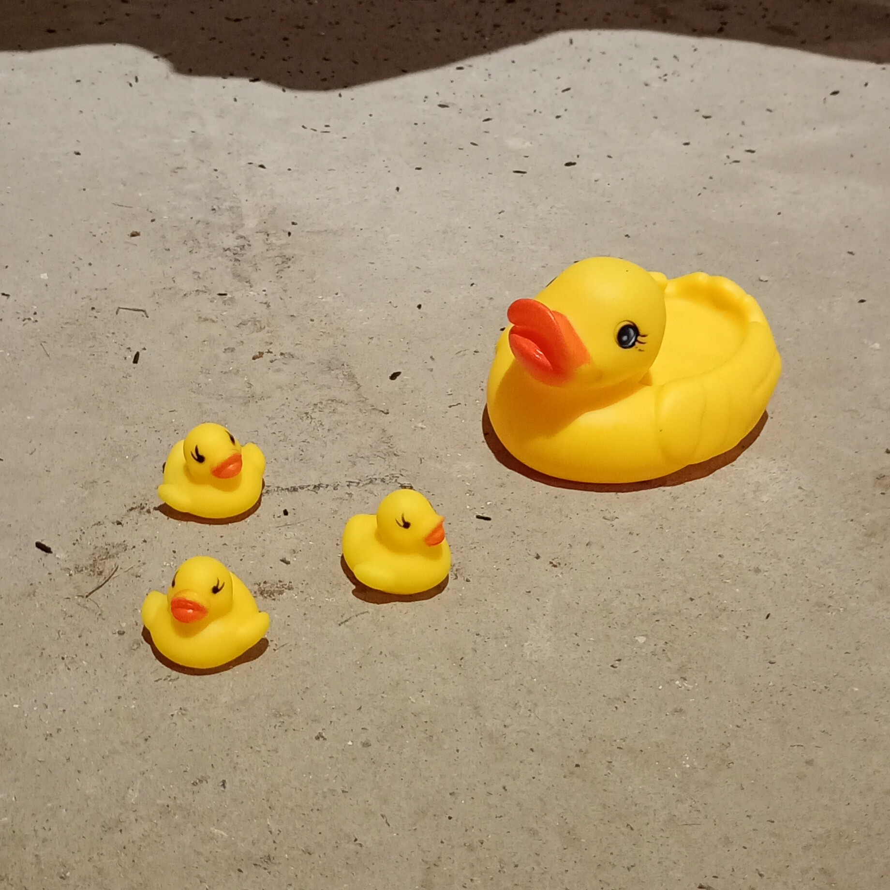 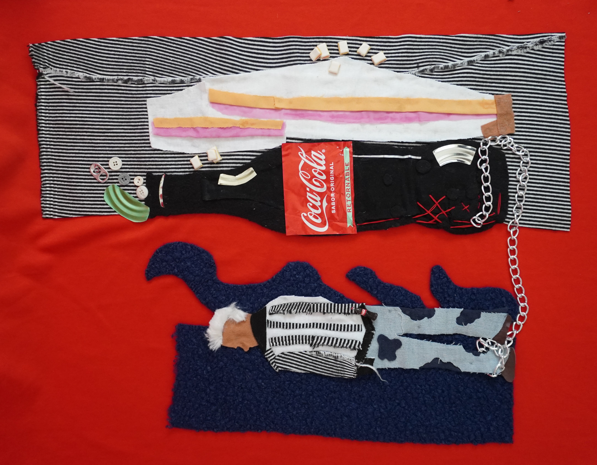 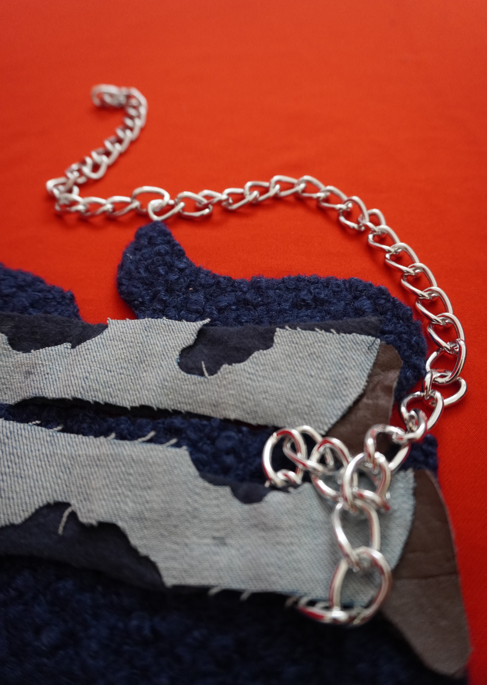 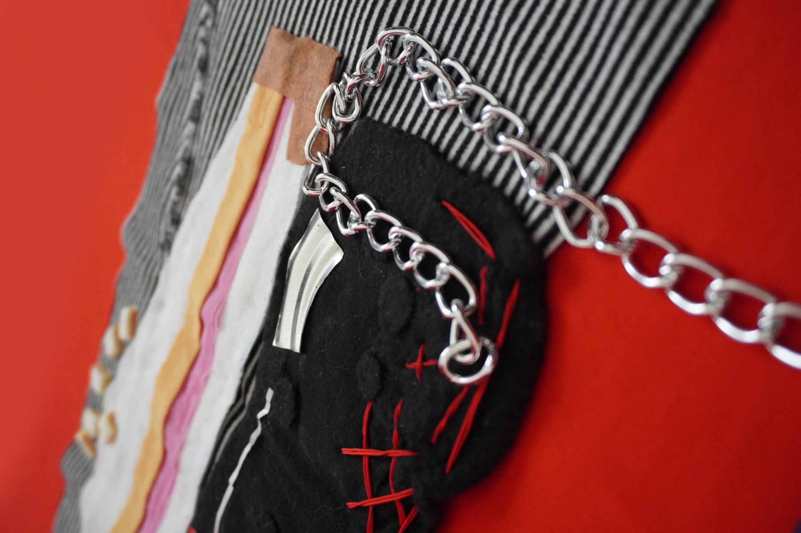
 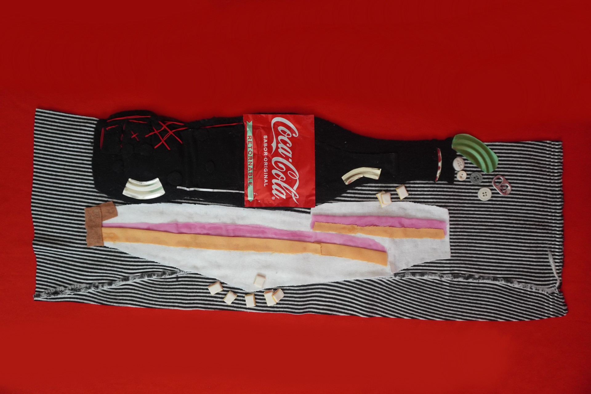
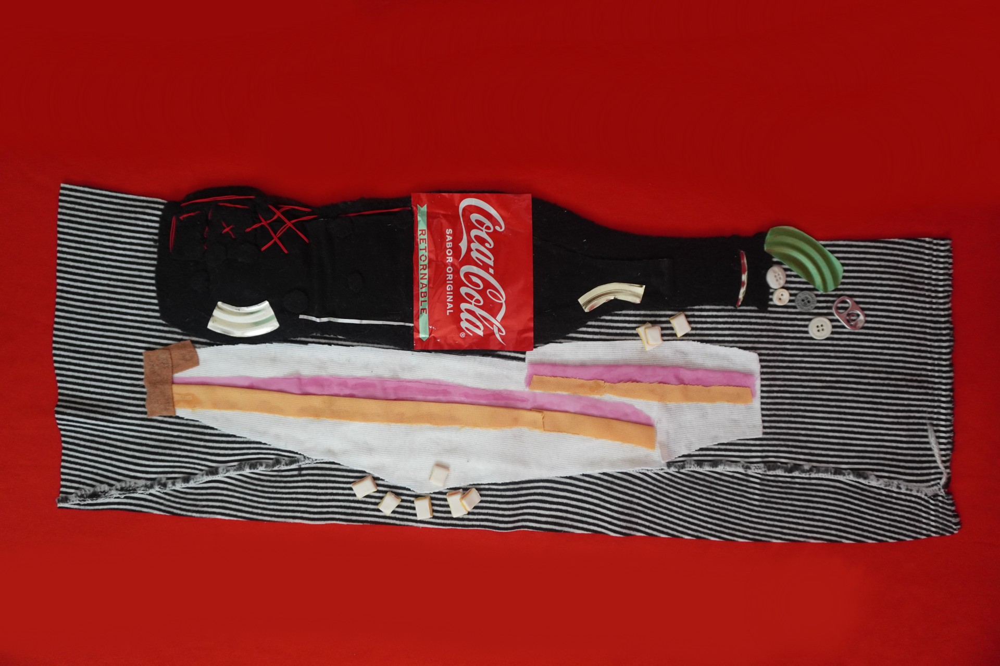


 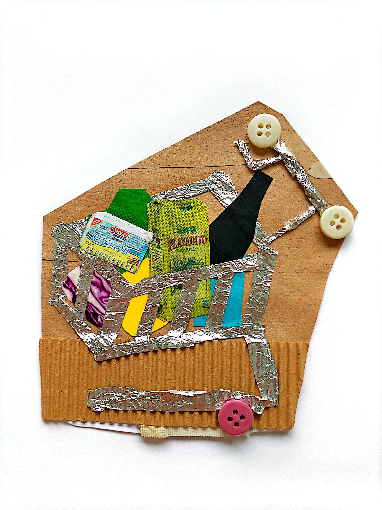
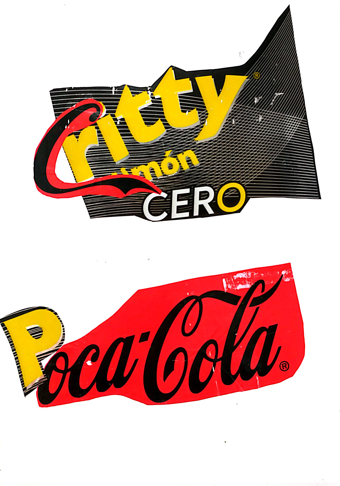
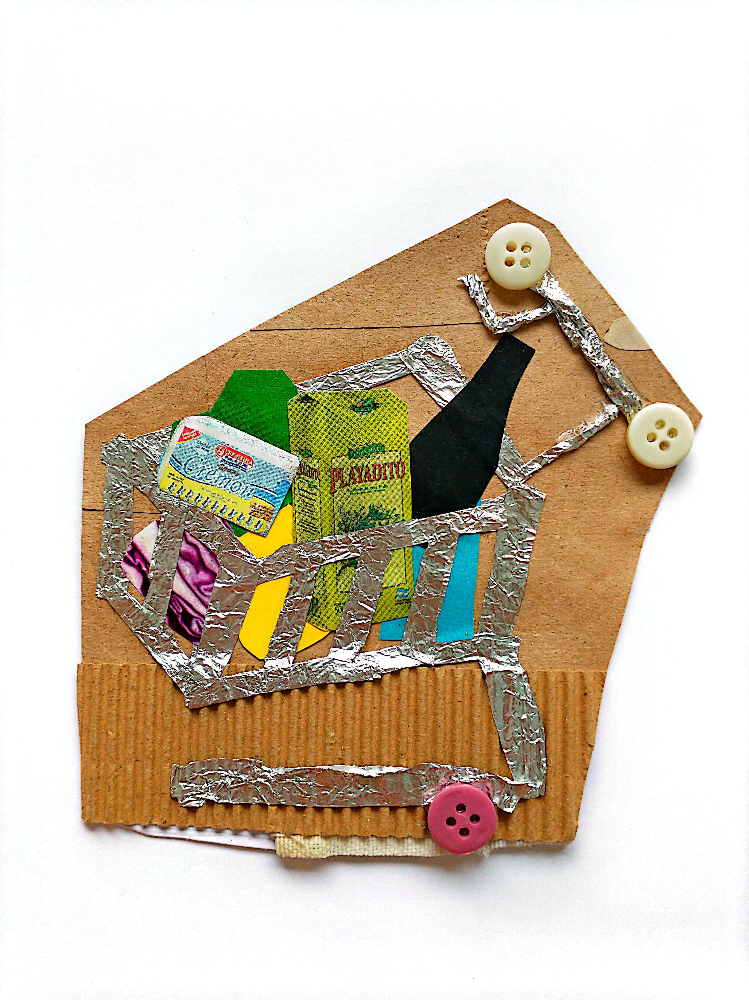
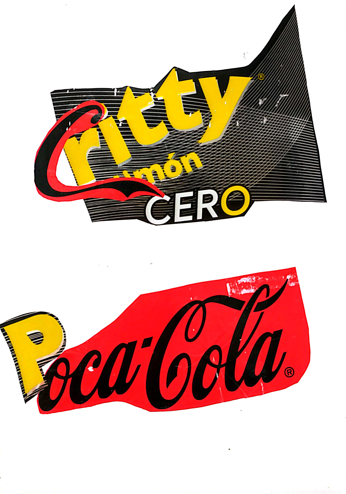
Información de contacto
 Rosario, Santa Fé, Argentina.
Rosario, Santa Fé, Argentina.
Whatsapp +54 9 2966 22-2190
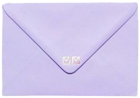 macielromi2002@gmail.com